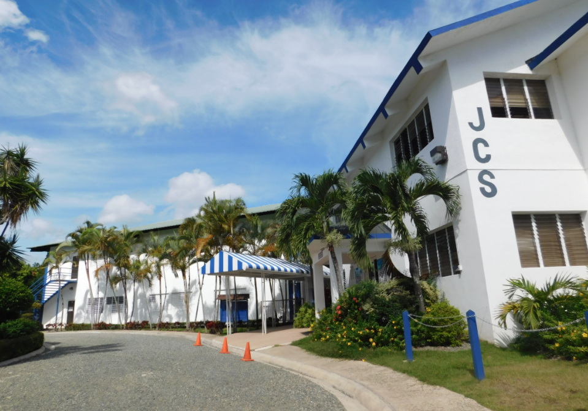
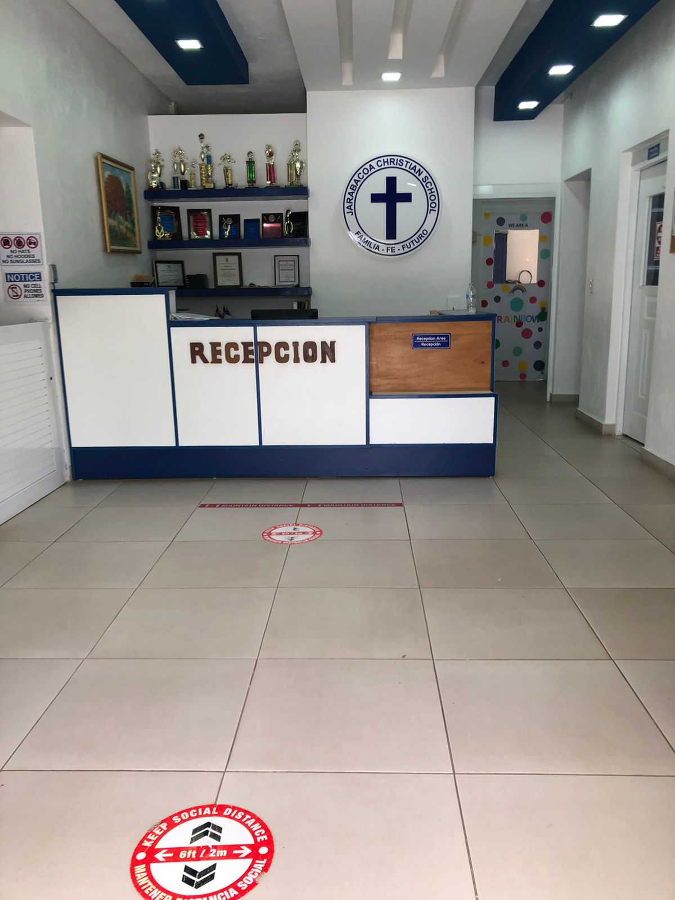

Campus
Cuando entramos a nuestro establecimiento,
es lo primero que vemos

Esta es nuestra recepcion, donde puedes enterarte
de toda información que necesites sobre nuestro colegio

Esta es una área creada para los niños menores de 10años,
aqui pueden recrearse y jugar sin ningún peligro.

Esta es otra área para que los mayores
de 10años se recreen y compartan,
esta incluye columpios para su diversion

Asi se ve el pasillo del edificio uno, donde
estan las aulas de los niños mas pequeños

Este es nuestro patio de juegos, aqui los niños
juegan futbol y toman sus clases de educ.fisica.